The Digital Wall at a glance
The Digital Wall is your shared operational picture, split across two surfaces. Both read from the same live Leon feed, but you use them very differently.
The wall (display / timeline)
The big dark screen in the ops room. A live timeline of every aircraft against the clock, with a status legend and manual limitations down the side. Nobody edits it — it reflects what the console decides.
The console
The light-themed app you sign in to. Pick which flight is on the wall, run the NOTAM check, write limitations, manage aircraft and operators, tune settings, and request documents.
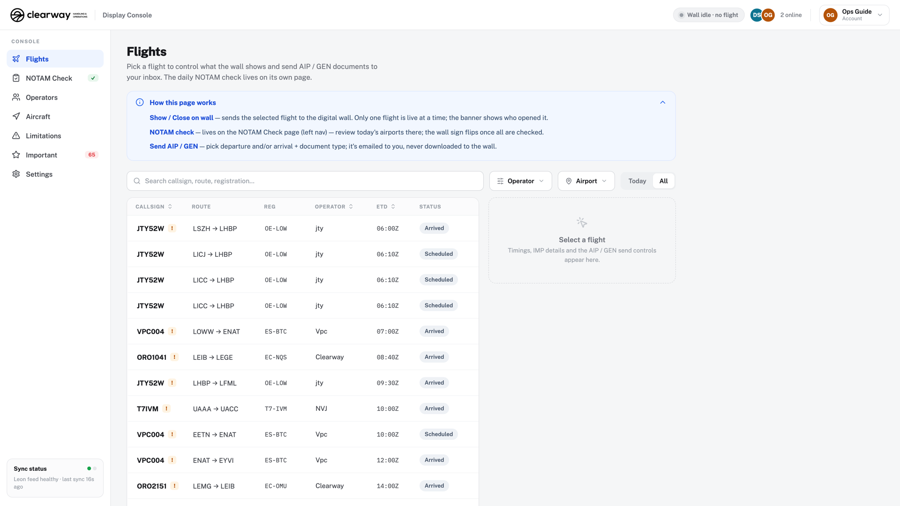
1 2 3Reading the timeline
Each aircraft has its own horizontal lane. Flights appear as pills placed against the hour grid — left edge at departure, right edge at arrival. Everything you need to read a flight is on and around the pill.
Anatomy of a pill
A scheduled flight: the two airport ICAOs sit at each end of the pill, with the departure and arrival times underneath.
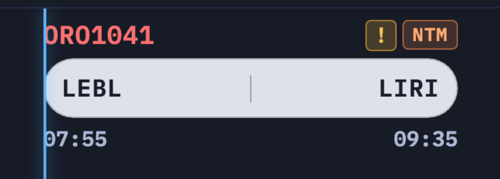
1 2 3 4Pill fill = flight state
The pill's fill colour tells you where the flight is in its life. The sidebar legend is your reference — it's always on the wall.
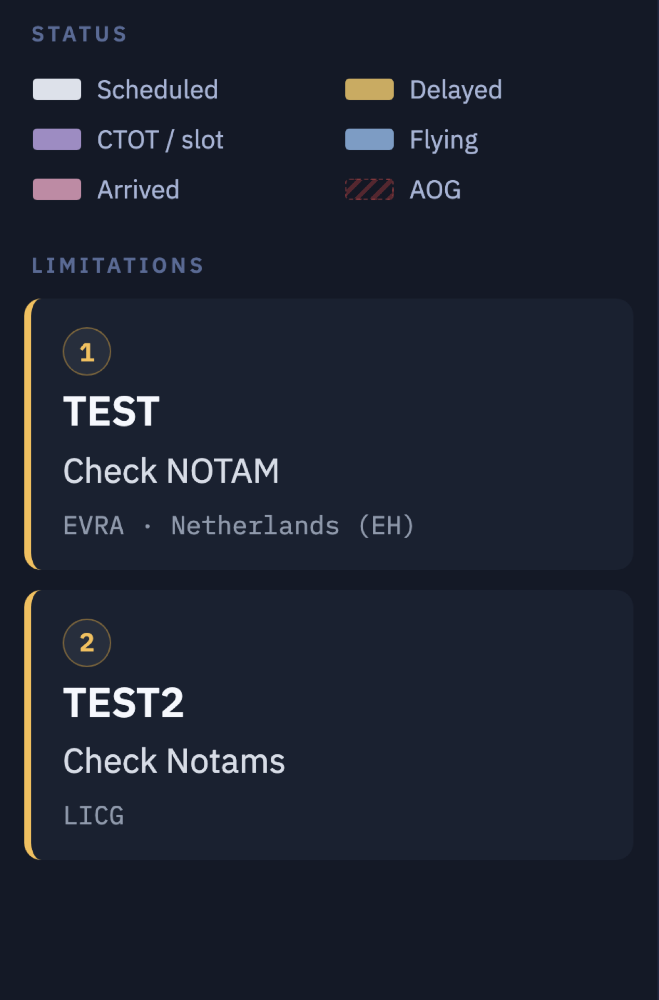
The delay hatch & actual times
When a flight runs late, a diagonal hatch fills the gap between the planned and the actual time. As real times land, the pill relabels itself: ETD→ATD on departure and ETA→ATA on arrival.
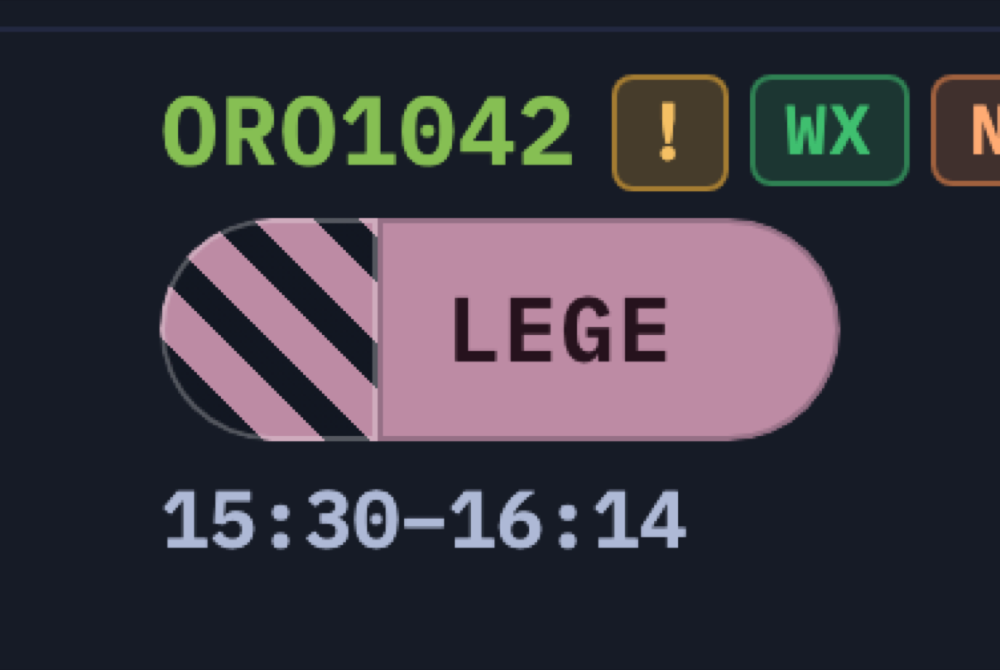
1 2 3The marker row
Above each pill, small badges flag anything that needs attention on that flight. They're generated automatically from the alert filter, the Important entries and matching CAA records. WX shows per airport, so a flight can carry a departure and an arrival badge at once.
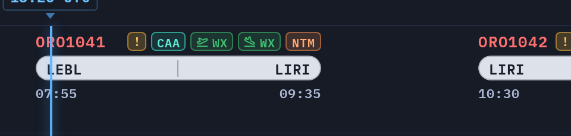
1 2 3In-motion pill states
Between Scheduled and Arrived a pill passes through these states. They're drawn here to the wall's exact pill design — dark board, mono ICAOs, flight ID above, times below.
Product-accurate renders — matched to the live pill styling.
The clock bar, hour spacing & auto-return
The clock bar across the top shows the home city and live time. Hour spacing controls how wide the hours are drawn — narrow fits more of the day on screen, wide spreads tight schedules apart. Both are set in the console's Settings.
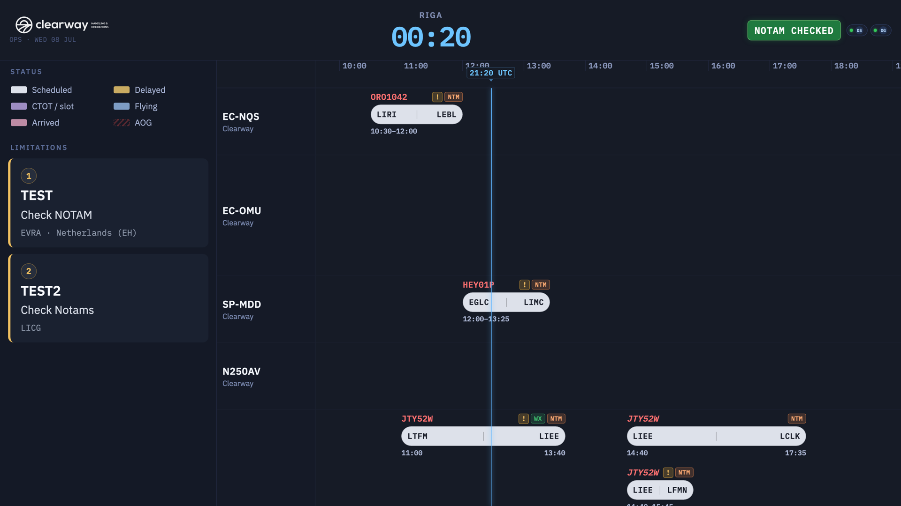
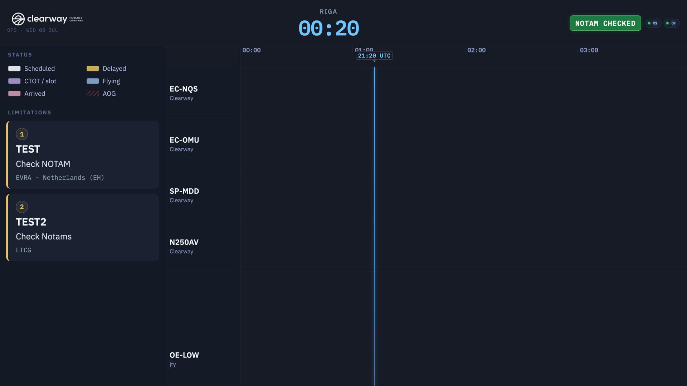
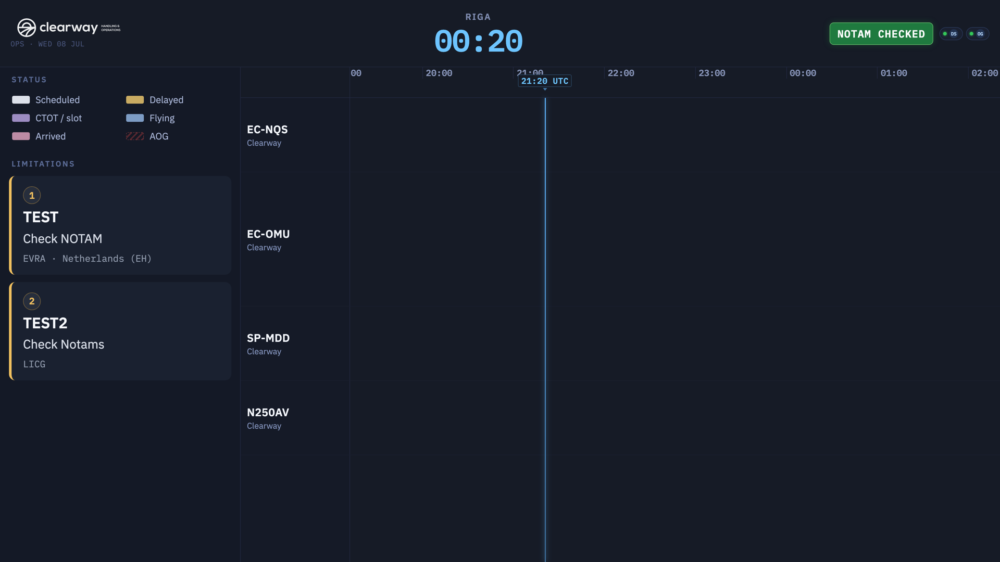
The flight side-overlay
When a dispatcher sends a flight to the wall from the console, a detail overlay slides in from the right. It's the full picture for the one flight that's live — and, like the rest of the wall, it's view-only.
You don't open it here — a dispatcher opens it from the console's Flights page with Show on wall. The banner names who opened it.
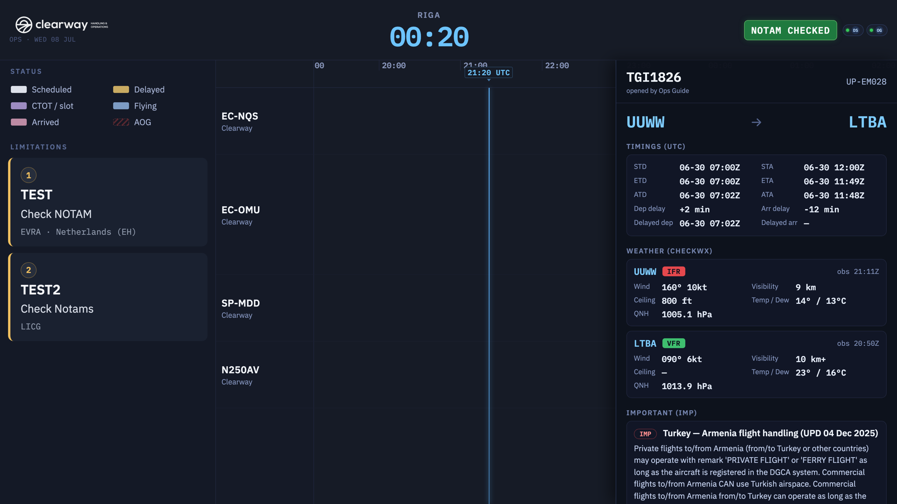
1 2 3 4 5The daily NOTAM check
Every morning the system runs a NOTAM scan at 10:00 Europe/Riga across every airport on today's flights, and the team reviews the result. Until every airport is signed off, the wall shows a red warning; once they're all done, it flips green.
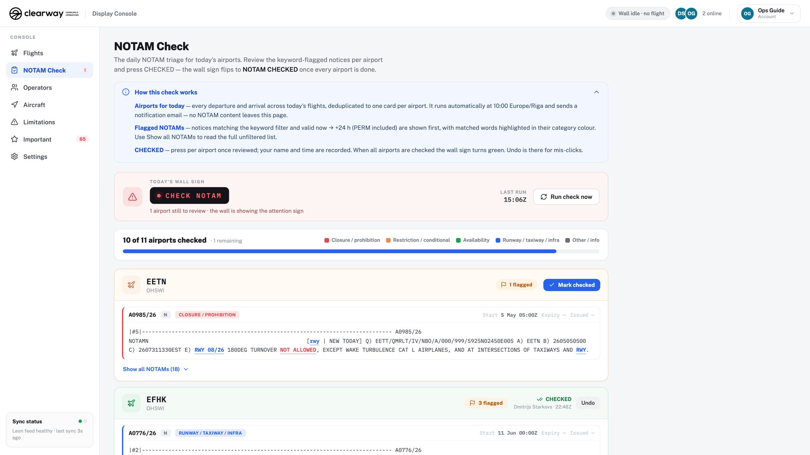
1 2 3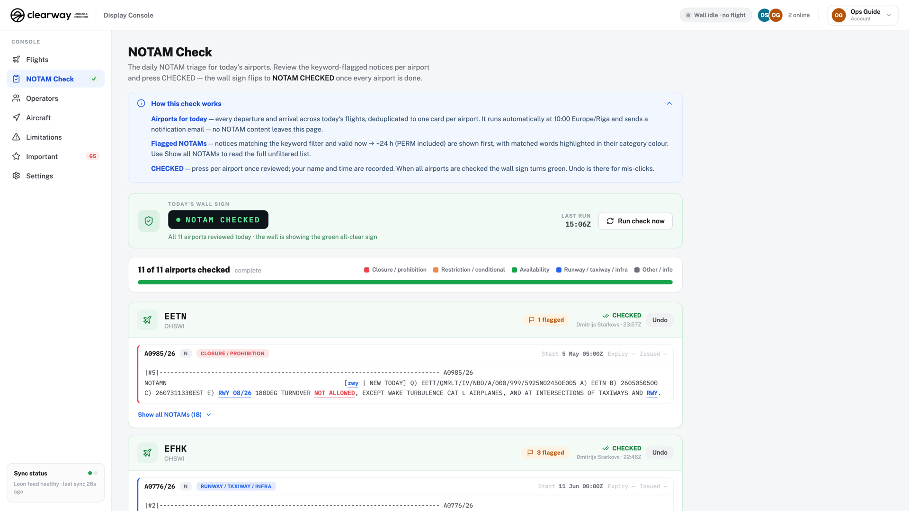
1 2 3 4 5Reading a NOTAM
Matched keywords are highlighted in their category colour so the critical phrase jumps out. The flagged list only shows notices valid from now to +24 h (PERM included); use Show all NOTAMs to read everything.
While any airport is still unreviewed, the wall shows the red pulsing !!! CHECK NOTAM !!! sign. Every morning starts here until the team works through the list; it flips to the green NOTAM CHECKED sign only once all airports are signed off.
If a NOTAM source can't be reached, its card shows a Fetch failed pill and a red banner with the reason. Press Retry to re-fetch — the airport can't be checked until it loads.
Weather (WX)
Each airport carries a flight category — a single colour-coded read of how good the conditions are. You'll see it as the WX badge on a pill, and decoded in full inside the side-overlay.
Weather on the wall is acknowledgment-only — it's there to inform, not something you action or clear.
Managing the console
Beyond Flights and NOTAM Check, four pages let you shape what the wall shows and how it behaves. Each carries its own "How this page works" panel at the top.
Operators
The Leon operators feeding the wall. Watch sync health at a glance, toggle an operator active/inactive, add a new one, or Force sync if the feed looks stale.
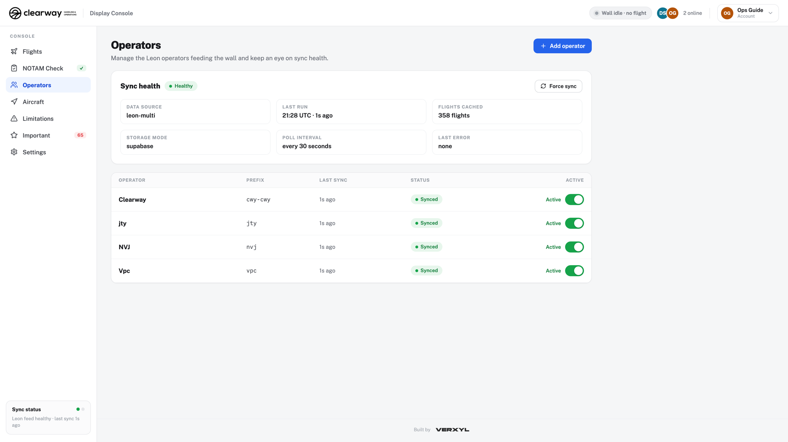
1 2 3Aircraft
Choose which aircraft appear on the wall. Hiding an aircraft removes its lane from the timeline immediately. Search, filter by operator, or use Show all / Hide all.
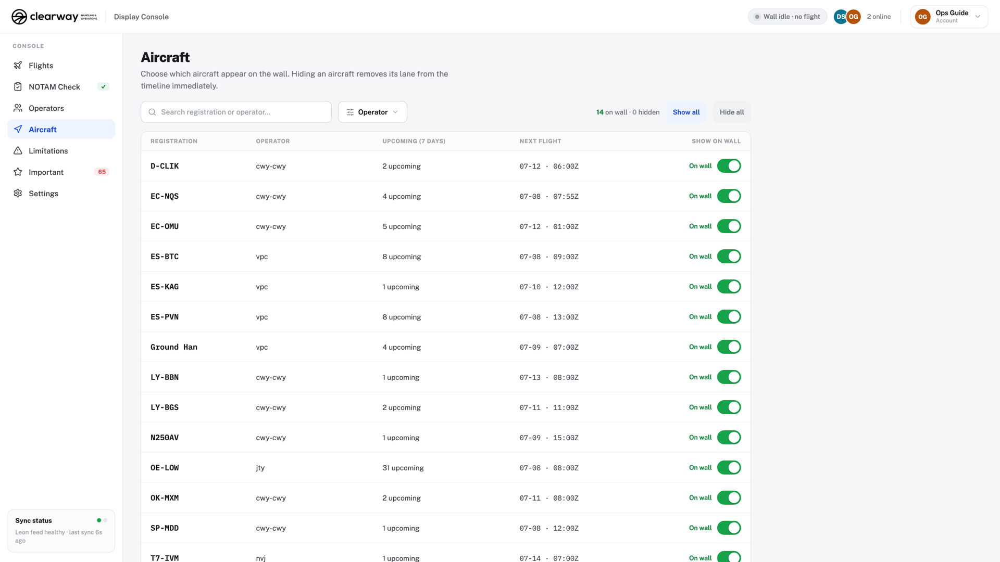
1 2 3Limitations REWORKED
Write the manual text limitations shown on the wall sidebar. Set the text, how it matches (flight, airport, country, or any mix — OR semantics), and its schedule. NOTAM, weather and IMP markers are generated automatically elsewhere.
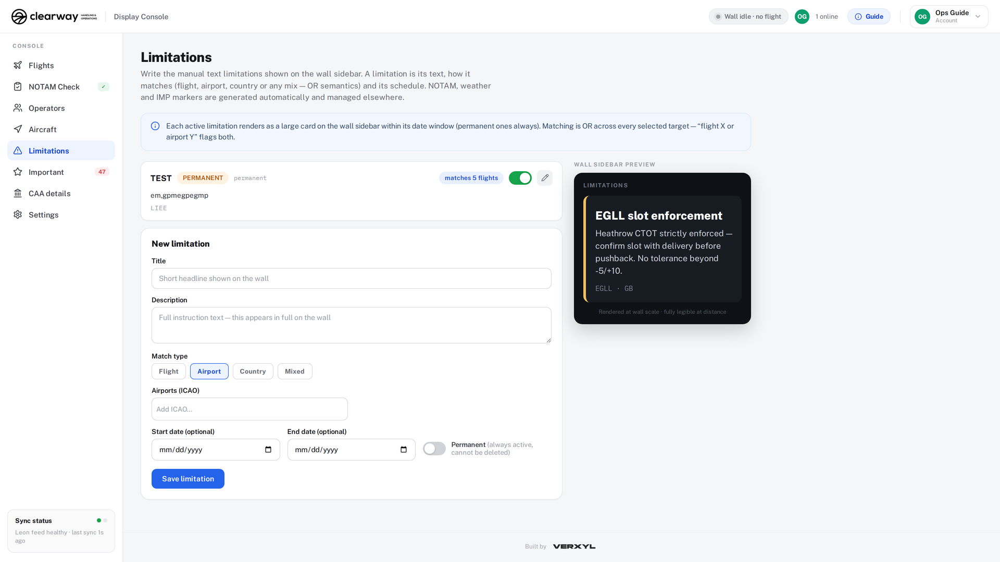
1 2 3 4Important (IMP)
Standing IMP limitations imported from the ops bulletin. A flight shows the "!" marker on the wall when it matches an entry's criteria — country, airport, operator or registration, respecting direction and date window. Auto-imported entries need a human review before they're trusted. Every entry is fully editable, takes file attachments, and carries added-by / confirmed-by audit stamps.
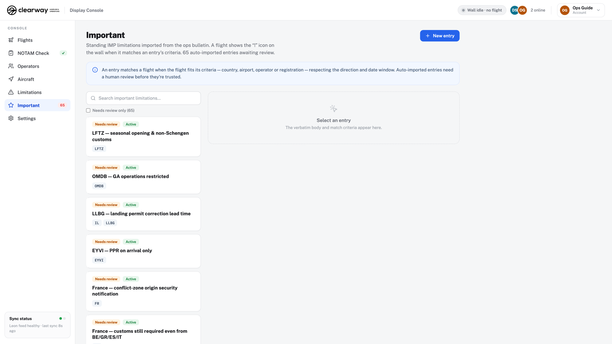
1 2 3Settings
Configure the wall's display and the NOTAM / alert filter that drives automatic flagging.
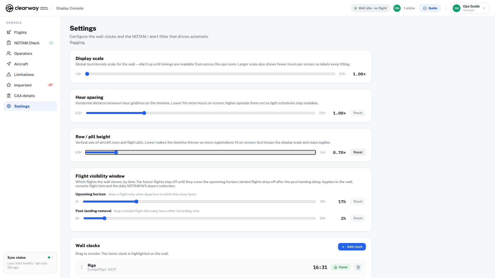
1 2 3 4CAA details
The CAA Details page holds Civil Aviation Authority contact details and permit processes — one record per authority. It replaces the shared OPS permit-contacts spreadsheet: when a flight matches a record, a teal CAA marker appears on its pill and the authority's contact block shows in the flight overlay.
Find it in the console's left nav, between Important and Settings.
The authority list
The left column lists every authority. Search by name, country or ICAO, or filter by country, function and flight kind. Each row shows its match flags at a glance.
A contact record
Selecting an authority opens its record. The contact fields mirror the old OPS permissions sheet column-for-column, so nothing from the spreadsheet is lost.
+44 20 7453 6599 (H24)
ops@caa.co.uk
Product-accurate render · fields mirror the OPS permissions sheet: Country · Authority · Validity · Function · INFO · Contact · Phone · Mail · SITA · AFTN · VFR flight-plan addresses.
Match flags — who gets it
Two things decide which flights a record surfaces on: where it applies (country and/or airport) and what kind of flight it applies to.
How it surfaces on the wall
When a flight matches an active record, two things appear: a teal CAA marker on the pill, and the authority's contact block in the flight side-overlay. The editor previews both at wall scale before you save.
AIP & GEN documents
Request briefing documents straight from a flight. Pick a flight on the Flights page, choose which airports and document types you need, and the pack is emailed to you — it is never downloaded to the wall.
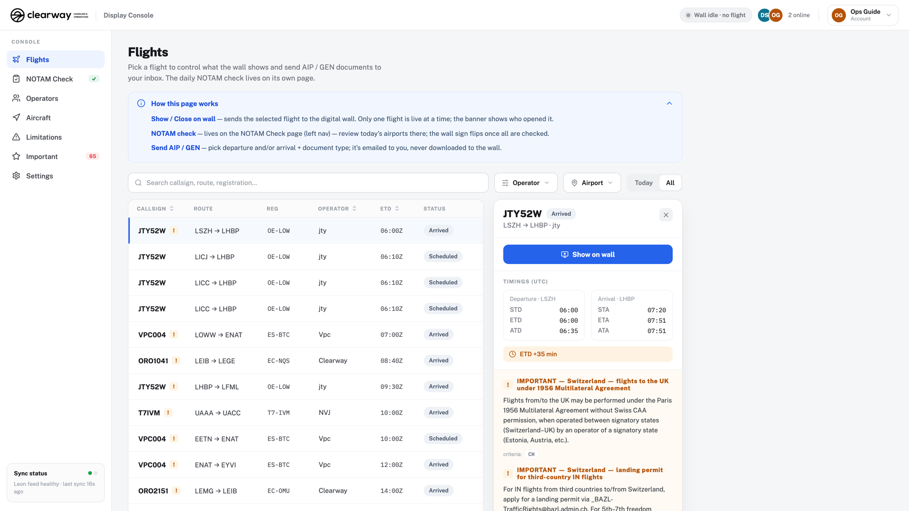
1 2 3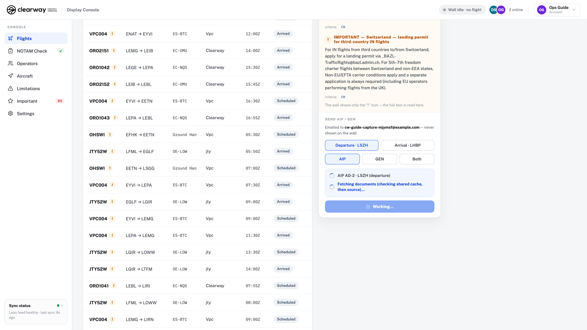
1 2 3 4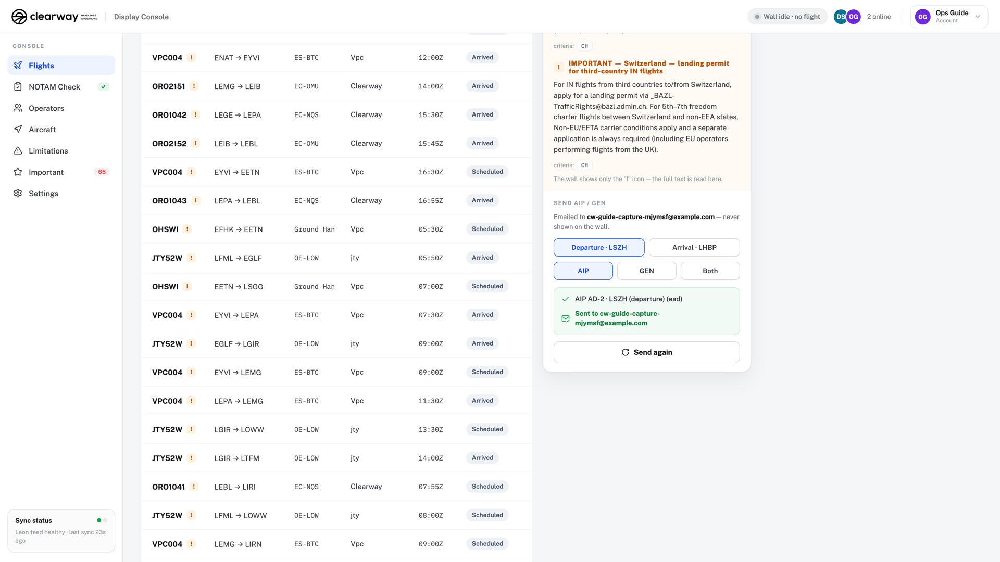
1 2Signing in
The console is behind a sign-in. Use your work email and password; there's account creation and forgot-password if you need them. After signing in you land back on your page.
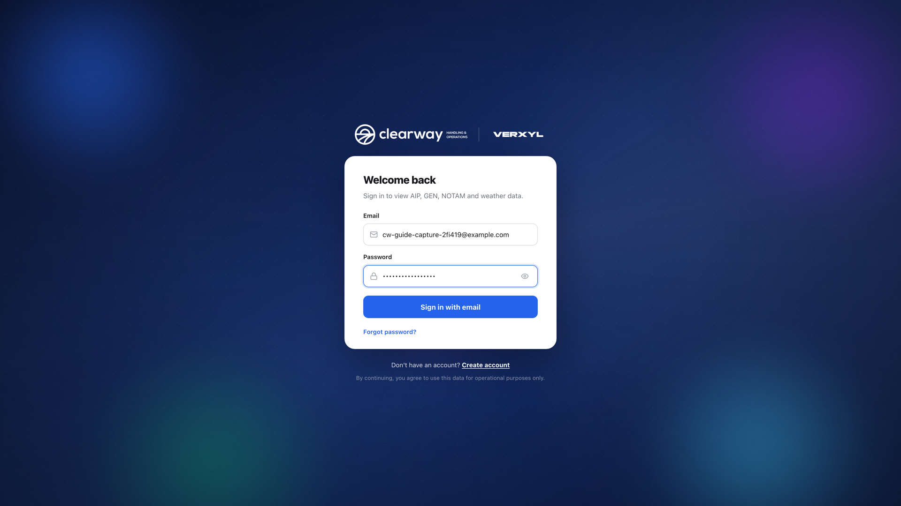
1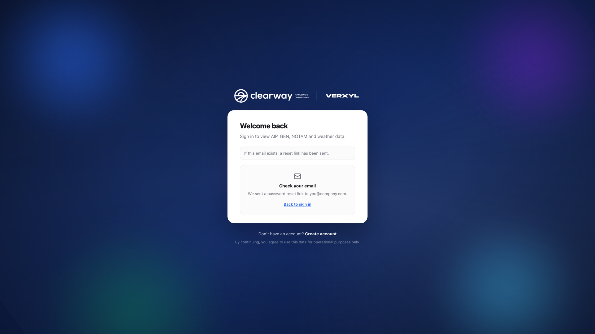
1